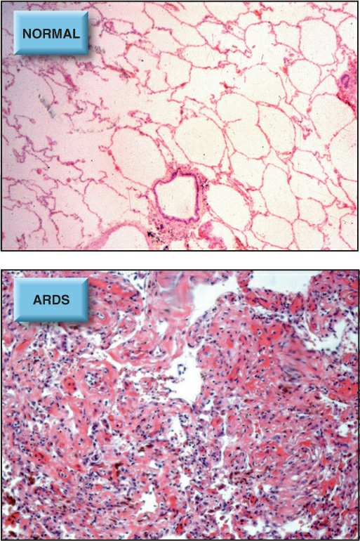

Del aire al capilar, la PEEP y las asincronías
Para elegir · no está en la app

Fig. 24.1 (Marino, cap. 24, PDF p. 34): pulmón normal frente a SDRA avanzado. Foto real de la ficha.
Las fuentes de esta lámina
Para profundizar (lo que esta lámina no cubre)
Prueba de los motores (Node)